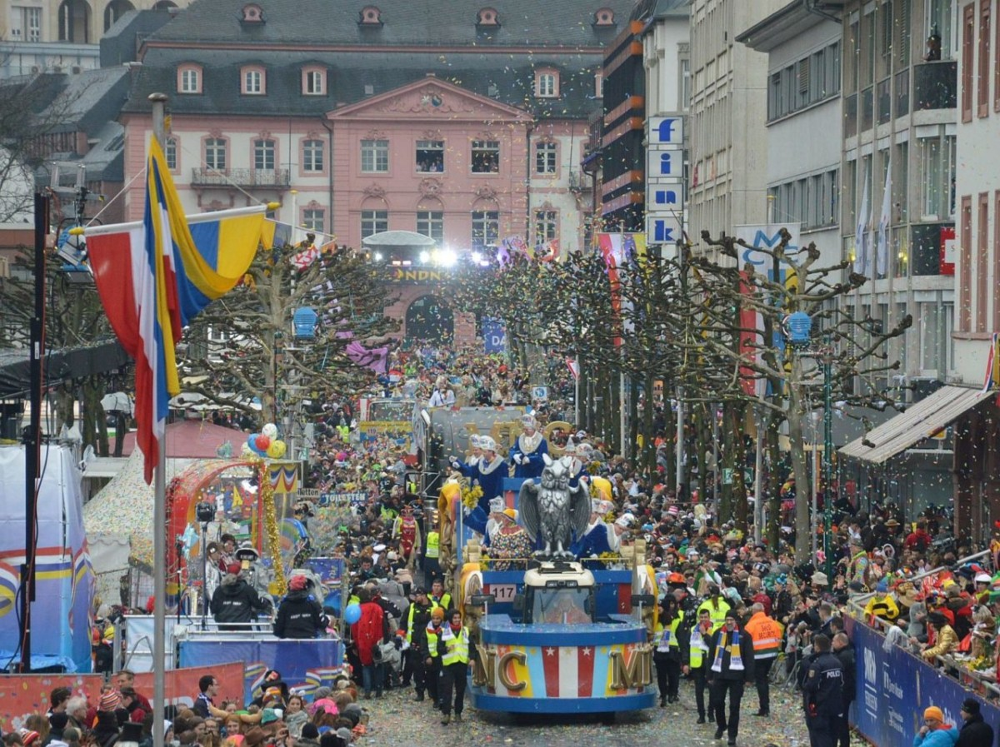

Die Geschichte des Kölner Karnevals
Diese Wurzeln des Kölner Karnevals reichen weit zurück. Schon im Mittelalter gab es ausgelassene Feiernavor der Fastenzeit, die mit Masken, Tänzern und Umzügen zelebriert wurden. Im 19.Jahrhundert wurde Karneval offiziell organisiert und erhielt seine heutige vorm. Heute ist er nicht nur Fest für Kölnerinnen und Kölner, sondern zieht auch Besucher aus der ganzen Welt an.
Der Straßenkarneval: Wenn die Stadt Kopf steht
Der offizielle Startschuss fällt am 11. November um 11:11 Uhr, aber die Hochphase beginnt mit Weiberfastnacht. Ab diesem Tag übernehmen die Jecken (Karnevalisten) die STadt. Höhepunkt ist der Rosenmontagsumzug, einer der größten Umzüge Europas, bei dem prachtvole Wagen, Musikgruppen und kostümierte Menschen die Straße füllen.
Die Karnevalshymne: Musik, die verbindet
Karneval ohne Musik? Unvorstellbar! Klassiker wie Viva Colonia oder Superjeilezick sorgen für die perfekte Partystimmung. Die kölsche Musik spielt eine zentrale Rolle im Karneval und verbindet Tradition mit modernem Party-Sound. Hier runter ist eine Liste von coolen Liedern: